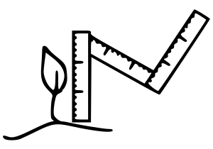

Conseil pour identifier le(s) module(s) qui vous correspond(ent) le mieux ou pour une co-construction de votre parcours sur-mesure.
Les enjeux environnementaux et sociétaux sont tels qu’ils deviennent incontournables et qu’il faut les intégrer dans les pratiques professionnelles, dans les organisations et imaginer de nouveaux modes de fonctionnement. Ils nous touchent toutes et tous : leur complexité est saisissante, peut amener de l’incompréhension et provoquer une perte de sens dans nos activités.
Nous accompagnons des transitions collectives et individuelles à l’intégration de ces enjeux.
Notre raison d'être est de contribuer à une dynamique sociale de transformation de notre façon de faire société, en accompagnant les personnes dans leurs organisations à concrétiser leur projet de transition, à bien (ou mieux) les vivre, et en respectant et régénérant l'environnement et le vivant. In fine, créer des alliances élargies au service du bien commun.
Conseil pour identifier le(s) module(s) qui vous correspond(ent) le mieux ou pour une co-construction de votre parcours sur-mesure.
Accompagnement de votre morphose, de la mobilisation de vos parties-prenantes, jusqu’au déploiement de votre stratégie, en passant par la facilitation de temps collectifs.
Formation pour que les membres de votre organisation se saisissent de la démarche de transition.
Ils seront déployés en partie ou dans leur ensemble, selon les modules choisis dans notre offre.
Nous sommes Axelle, Pierre et Anastasia, 3 personnes ayant parcouru à notre façon nos propres éco-morphoses.
A des moments de vie clés, nous avons remis en question les limites du modèle de société dominant moderne et avons personnellement réfléchi à notre façon de (re)mettre du sens dans nos activités professionnelles. C'est alors que nous nous sommes rencontrés autour du MSEI (Mastère Spécialisé en Eco-Ingénierie) porté par Toulouse INP, ce même outil que nous avons choisi tous les 3 pour mieux nous former aux enjeux du monde moderne.
Forts de nos cheminements individuels et à la suite de cette formation, nous mettons à disposition pour d'autres ce que nous y avons trouvé. Nous avons alors conçu Eco-morphose en y intégrant les valeurs et les méthodes de travail qui nous sont chères, dans l’intention de transmettre des clés de transition aux organisations et aux individus qui les composent.
Ce parcours commun apporte ainsi 3 éléments fondateurs de notre démarche :
une vision systémique
une sensibilité aux enjeux socieux et environnementaux
un travail en horizontalité et en transversalité
une gestion du projet en complexité

une vision systémique
une sensibilité aux enjeux socieux et environnementaux
un travail en horizontalité et en transversalité
une gestion du projet en complexité
mobiliser des personnes dans les organisations pour la durabilité du projet
faciliter des transitions entre le modèle d'aujourd'hui et ceux qui pourraient exister demain
"Viser la finalité d’un projet plutôt que des objectifs, poser les intentions d’une démarche, donner de l’importance au processus."

Bien que le modèle de société actuel présente de nombreuses limites, nous vivons aujourd'hui dedans et en sommes dépendants.
Nous aspirons à d'autres possibles, d'autres façons de vivre notre monde, tel un modèle de société qui n'existe pas encore.
Nous avons alors choisi un quotidien professionnel qui s'insère entre deux : en pratiquant une gouvernance horizontale et partagée, en revoyant notre rapport au temps, en favorisant les démarches de co-construction, en travaillant en extérieur dès que possible ... autant de points qui nous sont importants pour bien vivre notre activité professionnelle.
Nous revoyons régulièrement la compatibilité de ces modes de travail avec la stratégie de notre entreprise selon des méthodes que nous proposons également à nos clients.
En bref, Eco-morphose se positionne avec un rôle de trait d'union pour faciliter les transitions des organisations entre le modèle d'aujourd'hui et ceux qui pourraient exister demain.

Ce rôle de trait d'union requiert de s'adapter au mieux au contexte de chaque client. Ainsi, nous tenons à faire connaissance avec l'écosystème de chaque projet de façon à ancrer les démarches dans les organisations. De cette manière, nous développons des liens avec les femmes et les hommes de terrain pour comprendre les leviers de mobilisation, les verrous...
En bref, nous créons des relations propices à la collaboration et mobilisons des personnes en interne pour la durabilité du projet.
Notre socle commun d'outils s'est constitué en se formant au MSEI, c'est ici que nous avons développé nos postures d'éco-ingénieurs selon les compétences clés qui suivent :
Vision systémique et transversale
avec un positionnement résolument transdisciplinaire … une approche globale pour contextualiser un projet
Travail en horizontalité
un travail coopératif et inclusif pour que toutes les parties-prenantes d’un projet soient intégrées et puissent s’exprimer.

Enjeux sociaux et environnementaux
avec une sensibilité à l’ensemble des enjeux… les inégalités sociétales, le changement climatique, l’épuisement des ressources, la perte de biodiversité ou la perte de sens dans les organisations
Gestion de projet en complexité
une approche qui prend en compte les interactions entre personnes et qui agit sur leurs relations.
qui vise une stratégie opérationnelle, agile et ajustable dans votre contexte, porteuse d’actions adéquates et efficaces
En bref, viser la finalité d’un projet plutôt que des objectifs, s’attacher au processus pour y arriver et susciter l’adhésion de l’ensemble des parties-prenantes.